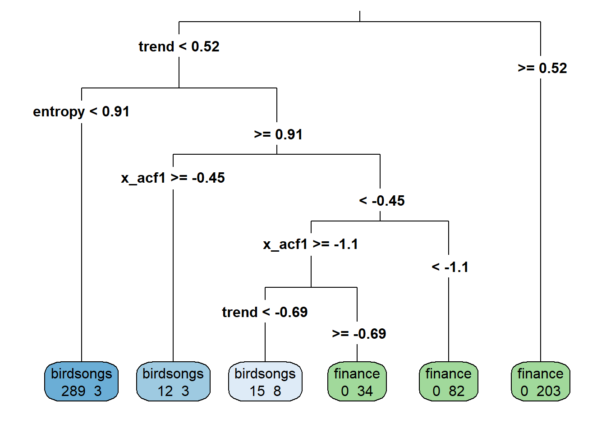
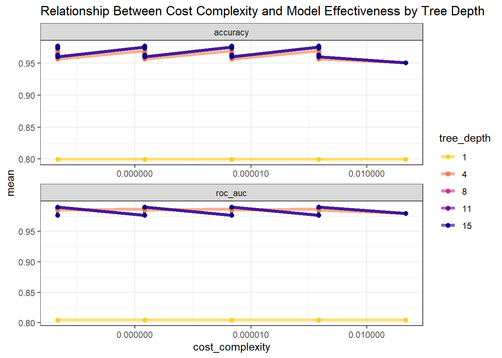
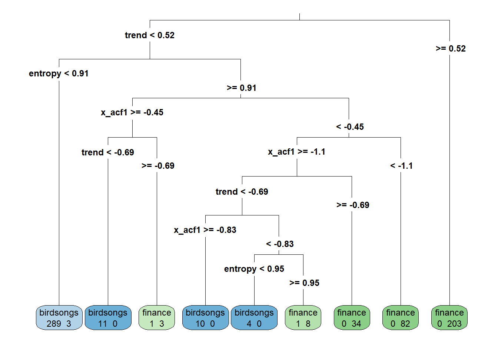
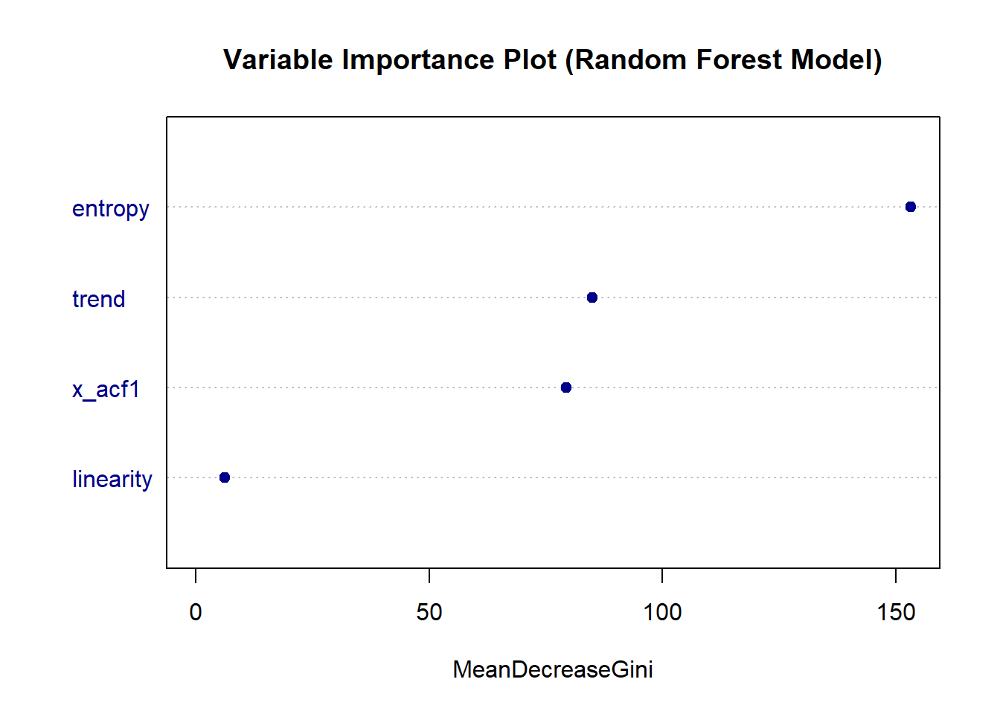
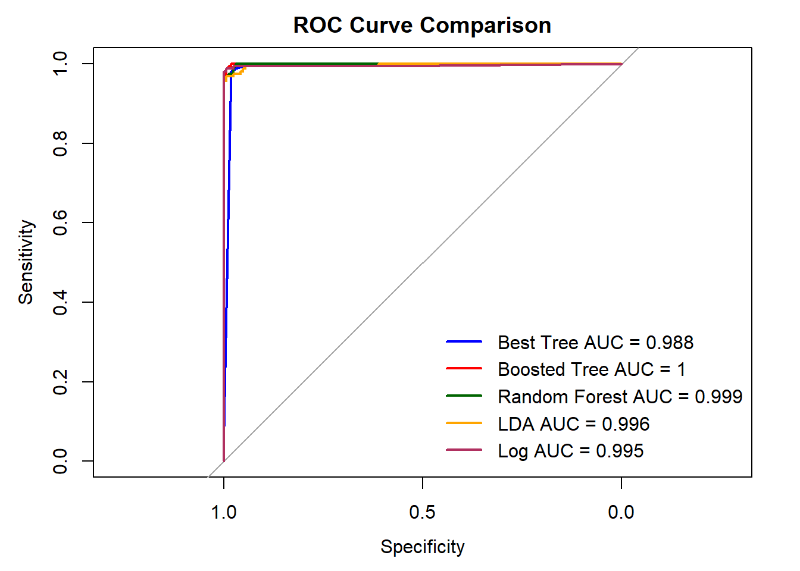

parsnip model object
n= 649
node), split, n, loss, yval, (yprob)
* denotes terminal node
1) root 649 320 finance (0.49 0.51)
2) trend< 0.52 446 130 birdsongs (0.71 0.29)
4) entropy< 0.91 292 3 birdsongs (0.99 0.01) *
5) entropy>=0.91 154 27 finance (0.18 0.82)
10) x_acf1>=-0.45 15 3 birdsongs (0.80 0.20) *
11) x_acf1< -0.45 139 15 finance (0.11 0.89)
22) x_acf1>=-1.1 57 15 finance (0.26 0.74)
44) trend< -0.69 23 8 birdsongs (0.65 0.35) *
45) trend>=-0.69 34 0 finance (0.00 1.00) *
23) x_acf1< -1.1 82 0 finance (0.00 1.00) *
3) trend>=0.52 203 0 finance (0.00 1.00) *ETC3250/5250 Assignment 3
Exercises
1. Basics of trees and forests (9pts)
(a) For the following tree, predict this observation, x1=1.53, x2=1.96, x3=1.36, x4=-0.346.
The decision tree analysis begins at the root node, evaluating the feature x3. As x3 = 1.36 is greater than or equal to 1.3 (i.e. at node 3), we proceed to the right child node. Within this node, it then considers the feature x1. As x1 = 1.53, this is greater than 1.2 hence leading to a traversal to the left child node.
At this terminal node, the prediction for the observation is determined, resulting in the classification of class B. Therefore, based on the decision tree’s criteria, the observation with features x1=1.53, x2=1.96, x3=1.36, x4=-0.346 is predicted to belong to class B.
(b) For this forest of trees, predict these three observations on each tree, and then using majority rule, their final prediction.
We will predict these three observations:
Observation 1:
x1 = 1.53, x2 = 1.96, x3 = 1.36, x4 = -0.346Observation 2:
x1 = 1.12, x2 = 0.741, x3 = 1.47, x4 = 0.926Observation 3:
x1 = 0.0899, x2 = -0.139, x3 = -0.0951, x4 = 1.87
Below are the predictions for each observation on each tree:
First Tree:
- Observation 1: predicted to be class B
- Observation 2: predicted to be class B
- Observation 3: predicted to be class A
Second Tree:
- Observation 1: predicted to be class B
- Observation 2: predicted to be class A
- Observation 3: predicted to be class B
Third Tree:
- Observation 1: predicted to be class B
- Observation 2: predicted to be class B
- Observation 3: predicted to be class B
Fourth Tree:
- Observation 1: predicted to be class C
- Observation 2: predicted to be class A
- Observation 3: predicted to be class A
Fifth Tree:
- Observation 1: predicted to be class B
- Observation 2: predicted to be class A
- Observation 3: predicted to be class A
Sixth Tree:
- Observation 1: predicted to be class B
- Observation 2: predicted to be class B
- Observation 3: predicted to be class A
Using majority rule, the final predictions for each observation are:
- Observation 1: class B
- Observation 2: either class A or class B
- Observation 3: class A
For observation 2, we have three out of six trees which predicted it to be class A. At the same time, we have three out of six trees which also predicted observation 2 to be class B.
(c) For the three observations, which was the model most uncertain about? Explain your reasoning. (Note that, these three observations were out-of-bag for each of the tree models.)
The model was most uncertain about Observation 2. This uncertainty arises because, for each of the six trees in the forest, Observation 2 was out-of-bag, meaning it wasn’t included in the training set for that particular tree. Out-of-bag samples are used to estimate the model’s performance without the need for a separate validation set. In the case of Observation 2, out of the six trees, three predicted it to be class A, while the other three predicted it to be class B. This balanced split in predictions indicates that, even when considering different subsets of the data, the model was not able to confidently assign Observation 2 to a single class, resulting in ambiguity.
Therefore, Observation 2 represents the instance where the model was most uncertain about its prediction, and this uncertainty is highlighted by the balanced split in predictions across the out-of-bag samples used by each tree in the forest.
2. Tuning a model (12pts)
(a) Fit a default tree to the training data, using the rpart package. Report and summarise the tree fit, and summarise the fit using the test set. (Be sure to use the tidymodels style of coding.)
The default decision tree model fitted to the training dataset reveals insights into the factors influencing the classification of observations into two categories: finance and birdsongs. As seen in Figure 1, the root node initially splits the dataset into 649 observations, with approximately equal proportions of finance and birdsongs categories (49% and 51%, respectively). The most significant predictor for further splits appears to be the trend variable. When the trend variable is less than 0.52, the majority of observations (446 out of 649) are classified as birdsongs.
Within this subset, the model identifies the entropy variable as another discriminating factor, where if entropy is less than 0.91, almost all observations (292 out of 295) are categorized as birdsongs. On the other hand, if entropy is greater than or equal to 0.91, the model examines the x_acf1 variable.
If x_acf1 is greater than or equal to -0.45, the majority of observations (15 out of 18) are classified as birdsongs, otherwise, if x_acf1 is less than -0.45, the majority (139 out of 154) are labeled as finance. Furthermore, within the finance category, the model further distinguishes between observations again based on the x_acf1 and trend variables, with specific thresholds indicating a shift towards one category or another.
Overall, the default decision tree provides insights into the relative importance of different predictors in determining classification outcomes, resulting in nodes with distinct class distributions.
Default Tree Fit on Training Data

Default Tree Fit Evaluation on Test Data
Based on the tree fit using the test set, the model demonstrates high accuracy levels when considering individual classes. Specifically, for observations classified as birdsongs, the default tree fit achieves an impressive accuracy of 99%, indicating that it correctly identified nearly all instances of birdsongs in the test data. This accuracy is driven by the model correctly identifying 157 instances of birdsongs (i.e. True Positives). However, there was one instance where the model misclassified a birdsong as finance (i.e. False Negative), indicating a slight weakness in distinguishing between these classes.
Similarly, for finance observations, the model also exhibits strong performance, with an accuracy of 95%, indicating its ability to effectively classify the majority of finance instances as well. This accuracy is primarily due to correctly identifying 159 instances of finance (i.e. True Negatives). However, there were 8 instances where the model incorrectly classified finance as birdsongs (i.e. False Positives), suggesting a potential area for improvement in distinguishing between these categories.
Overall, the model demonstrates robust performance in classifying both birdsongs and finance instances.
| type | birdsongs | finance | Accuracy |
|---|---|---|---|
| birdsongs | 157 | 1 | 0.99 |
| finance | 8 | 159 | 0.95 |
Consequently, the accuracy score of 97% reflects the model’s robust performance in correctly classifying observations across both birdsongs and finance categories. This high accuracy suggests that the model effectively captures the underlying patterns within the data, achieving strong predictive performance even across balanced classes.
Overall, these results indicate that the default decision tree model performs relatively well in classifying observations into their respective categories. The high accuracy rates, observed both overall and in the confusion matrix, underscore the model’s effectiveness in accurately predicting class labels and discerning between birdsongs and finance classes.
| .metric | .estimator | .estimate |
|---|---|---|
| accuracy | binary | 0.97 |
(b) Using the capabilities in tidymodels tune the tree on the parameters, tree_depth, min_n, cost_complexity. Include your code, summarise the results, and the parameters that will lead to the best model.
The code for tuning the parameters tree_depth, min_n, and cost_complexity is shown as below:
# Define tuning specifications for decision tree model
tune_spec <-
decision_tree(
tree_depth = tune(),
min_n = tune(),
cost_complexity = tune()
) %>%
set_engine("rpart") %>%
set_mode("classification")
# Define the grid of hyperparameters to search over
tree_grid <- grid_regular(tree_depth(),
min_n(),
cost_complexity(),
levels = 5)
# Define cross-validation folds
set.seed(234)
cell_folds <- vfold_cv(financebirds_tr)
# Define workflow for tuning
set.seed(345)
tree_wf <- workflow() %>%
add_model(tune_spec) %>%
add_formula(type ~ .)
# Perform hyperparameter tuning
tree_res <-
tree_wf %>%
tune_grid(
resamples = cell_folds,
grid = tree_grid
)Figure 2 reveals that the model’s performance, as measured by accuracy and ROC AUC, varies across different tree depths and cost complexity values. Notably, the shallowest tree, with a depth of 1, consistently performs poorly across all evaluated cost complexity values, indicating its limited ability to capture the underlying patterns in the data. Conversely, deeper trees, such as those with a depth of 15, exhibit improved performance, although not consistently the best across all metrics.
Optimal model performance appears to lie within a range of tree depths, particularly around 8 or 11, indicating a trade-off between model complexity and predictive accuracy. However, due to overlaps in Figure 2, it’s challenging to pinpoint the absolute best hyperparameter combination.

To further explore the top-performing models, the show_best() function is employed to identify the top five hyperparameter combinations based on mean accuracy. This reveals a consistent trend, with models featuring cost complexity values of 0.0000000001 and tree depths ranging from 8 to 15 consistently achieving high mean accuracy scores, often around 98%.
| cost_complexity | tree_depth | min_n | .metric | .estimator | mean | n | std_err | .config |
|---|---|---|---|---|---|---|---|---|
| 0.0000000001 | 8 | 11 | accuracy | binary | 0.98 | 10 | 0 | Preprocessor1_Model008 |
| 0.0000000001 | 11 | 11 | accuracy | binary | 0.98 | 10 | 0 | Preprocessor1_Model009 |
| 0.0000000001 | 15 | 11 | accuracy | binary | 0.98 | 10 | 0 | Preprocessor1_Model010 |
| 0.0000000178 | 8 | 11 | accuracy | binary | 0.98 | 10 | 0 | Preprocessor1_Model033 |
| 0.0000000178 | 11 | 11 | accuracy | binary | 0.98 | 10 | 0 | Preprocessor1_Model034 |
Subsequently, the select_best() function is utilized to determine the optimal hyperparameter combination, which is identified as having a cost complexity of 0.0000000001, a tree depth of 8 and a min_n (i.e., minimum number of observations required in a node for further splitting) of 11. This combination is deemed the most effective in achieving high predictive accuracy while maintaining model simplicity.
| cost_complexity | tree_depth | min_n | .config |
|---|---|---|---|
| 0.0000000001 | 8 | 11 | Preprocessor1_Model008 |
(c) Fit this best model to the training data. Assess and summarise the fit like done in part a. Write a sentence or two on how this improved the model or not.
Comparing the default decision tree model with the best-tuned model in Figure 3 reveals notable similarities and differences in their structure and predictive performance.
In terms of structure, both models begin by separating the dataset into finance and birdsongs categories at the root node. While the default model relies primarily on the trend variable for further splits, there are additional splits based on the x_acf1 and entropy variables in the best-tuned model that contribute to a more refined classification.
For instance, node 88 in the best-tuned model specifies that when x_acf1 is greater than or equal to -0.83, there are 10 observations classified as birdsongs with a probability of 100%, indicating a clear separation. Conversely, when x_acf1 is less than -0.83 (node 89), there are 13 observations classified as finance with a probability of 62%, indicating a shift towards the finance category. Similarly, nodes 178 and 179 introduce splits based on the entropy variable. When entropy is less than 0.95 (node 178), all 4 observations are classified as birdsongs with a probability of 100%. On the other hand, when entropy is greater than or equal to 0.95 (node 179), there are 9 observations classified as finance with a probability of 89%. This results in a more complex decision tree structure in the best-tuned model, as evidenced by the increased number of nodes and splits compared to the default model.
══ Workflow [trained] ══════════════════════════════════════════════════════════
Preprocessor: Formula
Model: decision_tree()
── Preprocessor ────────────────────────────────────────────────────────────────
type ~ .
── Model ───────────────────────────────────────────────────────────────────────
n= 649
node), split, n, loss, yval, (yprob)
* denotes terminal node
1) root 649 320 finance (0.49 0.51)
2) trend< 0.52 446 130 birdsongs (0.71 0.29)
4) entropy< 0.91 292 3 birdsongs (0.99 0.01) *
5) entropy>=0.91 154 27 finance (0.18 0.82)
10) x_acf1>=-0.45 15 3 birdsongs (0.80 0.20)
20) trend< -0.69 11 0 birdsongs (1.00 0.00) *
21) trend>=-0.69 4 1 finance (0.25 0.75) *
11) x_acf1< -0.45 139 15 finance (0.11 0.89)
22) x_acf1>=-1.1 57 15 finance (0.26 0.74)
44) trend< -0.69 23 8 birdsongs (0.65 0.35)
88) x_acf1>=-0.83 10 0 birdsongs (1.00 0.00) *
89) x_acf1< -0.83 13 5 finance (0.38 0.62)
178) entropy< 0.95 4 0 birdsongs (1.00 0.00) *
179) entropy>=0.95 9 1 finance (0.11 0.89) *
45) trend>=-0.69 34 0 finance (0.00 1.00) *
23) x_acf1< -1.1 82 0 finance (0.00 1.00) *
3) trend>=0.52 203 0 finance (0.00 1.00) *
After tuning, we fit the best tree model to the test set. Comparing it with the default tree model, we find similar accuracy levels for birdsongs, with the default model slightly outperforming the best-tuned model by 1% (99% for the default model versus 98% for the best-tuned model). Specifically, the best tree model misclassified 3 birdsongs observations, while the default model misclassified only 1 birdsongs observation.
In contrast, the best tree model outperforms the default model by 3% in the finance category, achieving 98% accuracy compared to the default model’s 95%. This improvement is because the best tree model misclassified only 3 finance observations, whereas the default model misclassified 8 finance observations.
Overall, the confusion matrix for the best tree model demonstrates a high level of accuracy in classifying observations into birdsongs and finance categories, both achieving 98% accuracy. This indicates that the tuned model correctly classified the majority of instances in both categories.
| type | birdsongs | finance | Accuracy |
|---|---|---|---|
| birdsongs | 155 | 3 | 0.98 |
| finance | 3 | 164 | 0.98 |
The best tree model also demonstrates an impressive overall accuracy of 98%, indicating its robustness in accurately classifying instances into birdsongs and finance categories based on the provided features. This level of accuracy underscores the effectiveness of the model in making precise predictions.
To conclude, both models (default and tuned) show proficiency in classifying the majority of observations, as evidenced by low loss values in the terminal nodes. However, the best-tuned model showcases enhanced granularity in its classification, especially within the finance category. By leveraging finer thresholds of the x_acf1 and entropy variables, the best-tuned model achieves better predictive accuracy and robustness compared to the default model.
These findings highlight the significance of balancing cost complexity and tree depth when optimizing model performance. While deeper trees may capture intricate patterns, they risk overfitting, while shallower trees might oversimplify the model.
| .metric | .estimator | .estimate |
|---|---|---|
| accuracy | binary | 0.98 |
3. Which is the better classifier? (15pts)
(a) Fit, summarise and assess a boosted tree model.
The boosted tree model, when trained and assessed on the test dataset, demonstrates strong performance in distinguishing between birdsongs and finance observations. With a high overall accuracy of 98%, this means that the model correctly classified the majority of instances in the test dataset.
| .metric | .estimator | .estimate |
|---|---|---|
| accuracy | binary | 0.98 |
Based on the confusion matrix below, both classes (birdsongs and finance) also exhibit high accuracy rates (97% and 99% respectively). For example, the model correctly identified 154 instances of birdsongs, but misclassified 4 instances as finance. Conversely, the model correctly identified 166 instances of finance, with only 1 misclassification as birdsongs.
Interestingly, the boosted tree model demonstrates a slightly higher accuracy for the finance class compared to the best tree model after tuning (99% vs. 98%) as the best tree model misclassified 3 finance observations, which is 2 more than the boosted tree. However, the best tree model after tuning shows a marginal improvement in accuracy for the birdsongs class compared to the boosted tree model (98% vs. 97%) by misclassifying only 3 birdsongs instances, one less than the boosted tree model.
| type | birdsongs | finance | Accuracy |
|---|---|---|---|
| birdsongs | 154 | 4 | 0.97 |
| finance | 1 | 166 | 0.99 |
Looking at Figure 4, the boosted tree starts with a split on the variable trend, with subsequent splits based on other variables such as x_acf1 and entropy.
Each split aims to reduce entropy and increase purity, as indicated by the gain values. Leaf nodes represent final predictions or classifications based on the values of the features. The tree structure shows a hierarchical decision-making process, where different features are considered at different levels to classify instances into different classes.
Variables such as trend and x_acf1 appear to be important for classifying instances in this boosted tree model. Based on the values of these features, the model effectively separates instances into distinct classes.
According to the table below, the most influential variables in the boosted tree model for predicting the target class are trend and entropy, with respective gains of 0.48 and 0.45. These variables exhibit significant coverage and frequency in the model, suggesting their strong predictive power. Conversely, variables such as x_acf1 and linearity contribute less to the model’s predictive performance, as indicated by their lower gains and frequencies.
| Feature | Gain | Cover | Frequency |
|---|---|---|---|
| trend | 0.48 | 0.42 | 0.33 |
| entropy | 0.45 | 0.41 | 0.32 |
| x_acf1 | 0.07 | 0.17 | 0.33 |
| linearity | 0.00 | 0.00 | 0.02 |
(b) Fit, summarise and assess a random forest model.
Using the randomForest algorithm with 1000 trees and considering 2 variables at each split, we trained a random forest model on our dataset. In this case, the out-of-bag (OOB) estimate of the error rate is relatively low at 1.7%, which indicates robust predictive performance on unseen data.
Looking at the confusion matrix for the training data, we observed that 310 instances of birdsongs were correctly classified, with 6 instances misclassified as finance. Similarly, 328 instances of finance were correctly classified, with 5 instances misclassified as birdsongs. The error rate for the birdsongs class is slightly higher at 1.9%, relative to the error rate for the finance class at 1.5%.
In summary, judging by the low OOB error rate and class error rates, the model appears to be effective in classifying instances into the birdsongs and finance classes for the training dataset.
parsnip model object
Call:
randomForest(x = maybe_data_frame(x), y = y, ntree = ~1000, mtry = min_cols(~2, x))
Type of random forest: classification
Number of trees: 1000
No. of variables tried at each split: 2
OOB estimate of error rate: 1.7%
Confusion matrix:
birdsongs finance class.error
birdsongs 310 6 0.019
finance 5 328 0.015When applied to the test dataset, the random forest model has a high overall accuracy of 98% (similar to the boosted tree and tuned best tree models). Delving into the confusion matrix for the test dataset, we found that 154 instances of birdsongs and 165 instances of finance were correctly classified, with only 4 birdsongs and 2 finance instances misclassified, resulting in accuracies of 97% and 99% for the respective classes.
While the random forest model exhibits a similar number of misclassified instances for birdsongs compared to the boosted tree model, it has a slightly higher number of misclassifications for finance instances, with 2 misclassifications compared to 1 for the boosted tree model. Similarly, it shows a slight advantage over the tuned tree model in correctly classifying finance instances, with 2 misclassifications compared to 3 for the tuned tree model. However, the tuned tree model demonstrates a slightly better performance in classifying birdsongs instances compared to the random forest model, with 3 misclassifications versus 4.
| .metric | .estimator | .estimate |
|---|---|---|
| accuracy | binary | 0.98 |
| type | birdsongs | finance | Accuracy |
|---|---|---|---|
| birdsongs | 154 | 4 | 0.97 |
| finance | 2 | 165 | 0.99 |
In Figure 5, the variable importance plot provides insights into the features driving the model’s predictive power. MeanDecreaseGini quantifies the importance of each variable in a random forest model by measuring the decrease in Gini impurity resulting from splitting nodes on that variable across all trees, with higher values indicating greater importance for making accurate predictions.
Notably, entropy emerges as the most influential feature, followed by trend and x_acf1, while linearity exhibits the lowest importance. This hierarchy suggests that entropy and trend play crucial roles in the model’s decision-making process, with entropy carrying the highest weight in determining class distinctions. Conversely, linearity is considered less important for predicting the target outcome, based on its lower position in the hierarchy of variable importance.

(c) Make an ROC curve to help decide which of the five models fitted is the better model.
According to Figure 6, the ROC curves demonstrate excellent performance across all models, with AUC values ranging from 0.988 to 1. The boosted tree model achieved the highest AUC of 1, indicating perfect discriminatory power when distinguishing between the birdsongs and finance classes, followed closely by the random forest model with an AUC of 0.99.

birdsongs (i.e. the positive class). Each curve represents a different model - Tuned Tree (blue), Boosted Tree (red), Random Forest (dark green), Linear Discriminant Analysis (LDA) (orange), and Logistic Regression (maroon). The area under the ROC curve (AUC) values for each model are provided in the legend.(d) Write a short paragraph describing your choice of best model, and what you have learned about how the time series for financial data and birdsongs typically differ.
Based on the ROC curves in Figure 6, the boosted tree model stands out as the best performer for distinguishing between the birdsongs and financial observations. With an AUC of 1 and a high overall accuracy rate of 98%, it demonstrates high predictive power and robustness in classifying the majority of instances in the test dataset. Moreover, it outperformed other models in certain aspects, such as achieving a slightly higher accuracy for the finance class compared to the best-tuned tree model and random forest model. By analyzing different model performances, this reveals distinctive characteristics of time series data for financial data and birdsongs. Both the boosted and tuned tree models reveal that features such as x_acf1 and entropy play important roles in distinguishing between the two classes. For instance, specific threshold values of x_acf1 and entropy contribute to more refined classification decisions, leading to improved model accuracy. Additionally, the importance plot from the random forest model highlights the significance of features such as entropy, trend, and x_acf1 in predicting class distinctions. These findings suggest that while features related to autocorrelation (represented by x_acf1) and entropy are often associated with non-linear and complex time series data such as birdsongs, variables such as trend is more commonly associated with financial data. Entropy and autocorrelation capture the complexity and temporal dependencies present in non-linear time series data such as birdsongs, reflecting the diversity and structure of birdsong audio tracks. In contrast, trend analysis is typically applied to financial time series data, identifying long-term directional movements in asset prices or market indices, which are influenced by underlying economic factors and market dynamics. Overall, effective feature selection and model tuning are essential for capturing the unique characteristics of diverse time series data.
References
Chen, T., et al. (2024). xgboost: Extreme Gradient Boosting. R package version 1.7.7.1. Retrieved from https://CRAN.R-project.org/package=xgboost.
Hvitfeldt, E., & Kuhn, M. (2023). discrim: Model Wrappers for Discriminant Analysis. R package version 1.0.1. https://CRAN.R-project.org/package=discrim.
Kuhn, M., et al. (2020). Tidymodels: a collection of packages for modeling and machine learning using tidyverse principles. Retrieved from https://www.tidymodels.org.
Liaw, A., & Wiener, M. (2002). Classification and Regression by randomForest. R News, 2(3), 18–22.
Milborrow, S. (2024). rpart.plot: Plot ‘rpart’ Models: An Enhanced Version of ‘plot.rpart’. R package version 3.1.2. https://CRAN.R-project.org/package=rpart.plot.
Robin, X., Turck, N., Hainard, A., Tiberti, N., Lisacek, F., Sanchez, J.-C., & Müller, M. (2011). pROC: an open-source package for R and S+ to analyze and compare ROC curves. BMC Bioinformatics, 12, 77. DOI: 10.1186/1471-2105-12-77. http://www.biomedcentral.com/1471-2105/12/77/.
Therneau, T., & Atkinson, B. (2023). rpart: Recursive Partitioning and Regression Trees. R package version 4.1.23. https://CRAN.R-project.org/package=rpart.
Wickham, H., et al. (2019). Welcome to the tidyverse. Journal of Open Source Software, 4(43), 1686. DOI:10.21105/joss.01686. Retrieved from https://doi.org/10.21105/joss.01686.
Wickham, H., & François, R., & Henry, L., & Müller, K., & Vaughan, D. (2023). dplyr: A Grammar of Data Manipulation. R package version 1.1.4. https://CRAN.R-project.org/package=dplyr.
Wickham, H., & Hester, J., & Bryan, J. (2024). readr: Read Rectangular Text Data. R package version 2.1.5. https://CRAN.R-project.org/package=readr.
Zhu, H. (2024). kableExtra: Construct Complex Table with ‘kable’ and Pipe Syntax. R package version 1.4.0. https://CRAN.R-project.org/package=kableExtra.
OpenAI (2023). ChatGPT (version 3.5) [Large language model]. https://chat.openai.com/chat, full script of conversation here